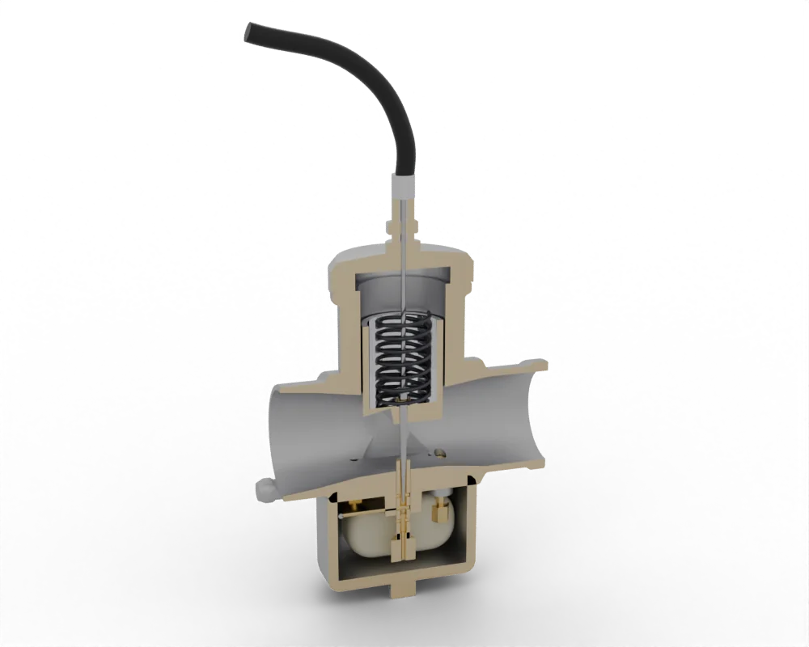
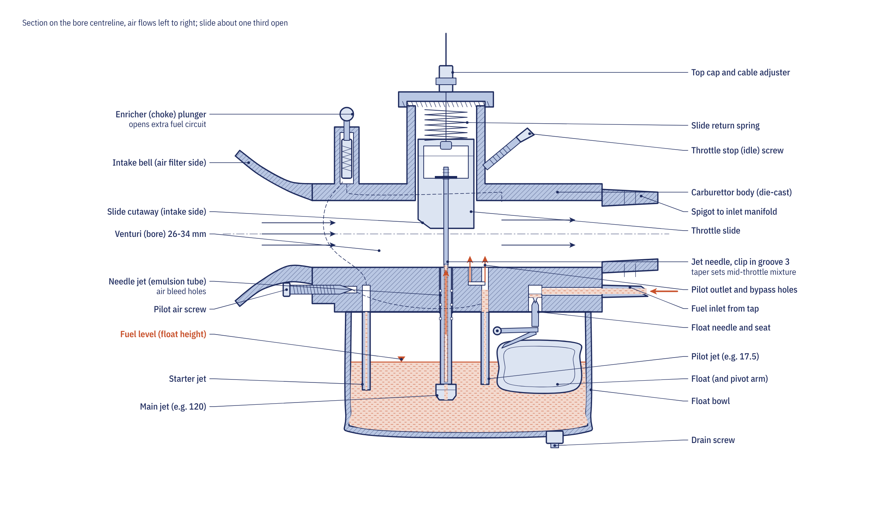

The job both systems do
Petrol burns completely with air at a ratio of about 14.7 kg of air to 1 kg of fuel, which engineers call a lambda of 1. A cold engine needs a richer mixture to start, full throttle runs slightly rich to make power and protect the valves, and a modern catalytic converter only works well when the mixture is held very close to lambda 1. A fuel system therefore has to measure the air the engine is taking in and add fuel in proportion, from idle to full throttle, hot or cold, at sea level or on a mountain.
How a carburettor meters fuel
A carburettor uses the pressure drop of air speeding up through a narrow passage. As air rushes through the venturi or under the throttle slide, its pressure falls. A fuel nozzle opens into that low-pressure zone, while the float bowl underneath is vented to the atmosphere, so atmospheric pressure pushes fuel up through calibrated jets into the airstream, where it breaks into droplets and evaporates.
Air and fuel do not respond to suction in the same way, so a single jet would give a mixture that richens as airflow rises. A carburettor therefore uses several overlapping circuits, each dominating a range of throttle opening, not of engine speed:
| Throttle opening | Main circuit | Part that sets it |
|---|---|---|
| Closed to 1/8 | Pilot (low-speed) circuit | Pilot jet and pilot screw |
| 1/8 to 1/4 | Transition | Slide cutaway |
| 1/4 to 3/4 | Mid-range | Jet needle taper and clip position |
| 3/4 to full | High speed | Main jet |
| Cold start | Enricher or choke | Starter jet and plunger, or choke plate |
A float on a pivot closes a needle valve when the fuel reaches a set height, so the head of fuel under the jets stays constant. A float level set too high richens every circuit, and a sticking needle lets the bowl overflow.

Slide and constant-velocity carburettors
In a slide carburettor the throttle cable lifts the slide directly, so the rider controls the size of the venturi. Response is instant, which suits two-stroke off-road machines, but a large slide snapped open at low revs can make the engine bog. In a constant-velocity (CV) carburettor, used on many four-stroke commuters, the cable turns a butterfly and a piston on a rubber diaphragm rises only as fast as the engine's airflow allows. A torn diaphragm leaves the piston down, so the engine runs but will not rev beyond a moderate speed.
Why fuel injection replaced the carburettor
A carburettor cannot hold the mixture inside the narrow window a three-way catalyst needs, cannot correct accurately for air density, temperature or the ethanol in the fuel, and cannot report its own faults. Electronic fuel injection (EFI) meters fuel by holding an electric valve open for a calculated time under constant pressure, and corrects that time continuously from an oxygen sensor in the exhaust. Once European emission limits made a catalyst with closed-loop control the practical route to approval, injection spread from large machines down to 125 cc commuters. In India the same change came with Bharat Stage VI in April 2020.
How a motorcycle fuel injection system works

The K-Light 125 used in the course has a typical small-engine system:
- An in-tank fuel pump with a built-in regulator holds about 300 kPa at the injector. At key-on the ECU runs the pump for about 3 seconds to prime the line, then stops it unless the engine is turning, so a broken line after a crash cannot empty the tank.
- A throttle body carries the butterfly, a throttle position sensor, a combined intake pressure and temperature sensor and a stepper-motor idle control.
- A port injector, a solenoid valve of about 10 Ω, sprays fuel at the back of the inlet valve.
- A crankshaft trigger, a cylinder-head temperature sensor and a heated oxygen sensor feed the ECU, which also controls the ignition, and a malfunction lamp marked FI reports faults.
The ECU works out the air mass entering the cylinder from manifold pressure, engine speed and air temperature, then sets the pulse width, the time the injector is held open. The course's worked example for a 124 cm³ single gives about 6 ms per cycle. Once the engine is warm the ECU runs in closed loop, nudging the pulse width up and down against the oxygen sensor so the mixture oscillates around lambda 1, which also suits the catalyst. When cold, at full load and during sharp throttle changes it runs open loop from its stored maps.
Carburettor and injection compared
| Carburettor | Fuel injection | |
|---|---|---|
| How fuel is metered | Suction of the airflow through fixed jets | ECU opens an injector for a calculated time |
| Cold starting | Rider uses the choke or enricher | Automatic; do not touch the throttle |
| Altitude and temperature | Mixture drifts; rejet for big changes | Corrected by sensors |
| Emissions | Cannot hold lambda for a three-way catalyst | Closed loop with a catalyst meets current rules |
| Electrics needed | None for fuel; gravity feed from the tap | Battery voltage for the pump, ECU and injector |
| Fault finding | Jets, float, diaphragm and air leaks by inspection | Fault codes, sensor checks and fuel pressure test |
Living with each system
A carburettor's commonest troubles come from stale fuel: petrol left in the float bowl evaporates and leaves varnish that blocks the tiny pilot jet, so the bike starts only on choke or will not idle. Our carburettor cleaning guide covers the order of checks and the cleaning method. Twins and fours with one carburettor per cylinder also need balancing so every throttle opens together.
Injection systems need less routine attention, but they have their own rules. Do not open the throttle while starting an injected engine, because the ECU calculates the cranking fuel itself; the exception is a flooded engine, where holding the throttle wide open triggers a clear-flood mode. The fuel line stays under pressure after the engine stops, so relieve it before disconnecting anything. The K-Light manual gives 7,000 to 10,000 km for the fuel filter and cleaning the throttle body every 10,000 km or one year, after which many ECUs need an idle relearn. A weak battery can upset injection too: the pump needs 12 ± 2 V at its connector while priming and cranking.
Go deeper
- Chapter 3.1: Air, fuel and mixture: carburettor circuits, jetting order and synchronising
- Chapter 3.4: Electronic fuel injection and engine management: sensors, ECU strategy, emissions and fault codes
- Equations summary: air-fuel ratio, lambda, injector pulse width and duty cycle
- Fuel, air and exhaust quiz: test yourself on Module 3
- Videos: fuel systems
- Carburettor tuning order
- Throttle body cleaning
- Reading fuel injection fault codes
- Fuel pump check
- Engine warning light on
Frequently asked questions
Is fuel injection better than a carburettor on a motorcycle?
For most road riding, yes: injection starts easily, corrects for altitude and temperature, uses fuel more precisely and works with a catalytic converter to meet emission rules. A carburettor is simpler, needs no electrics to deliver fuel and can be repaired with basic tools.
Why do new motorcycles not have carburettors?
A carburettor cannot hold the mixture inside the narrow window a three-way catalyst needs, so it cannot meet current emission limits. Injection with an oxygen sensor can, which is why even 125 cc commuters now use it.
Should I open the throttle when starting a fuel-injected motorcycle?
No. The ECU calculates the fuel and idle air for starting itself. The only exception is a flooded engine, where holding the throttle fully open while cranking puts most ECUs into a clear-flood mode that stops injection.
What does the choke do on a carburettor?
It richens the mixture for a cold start. Most modern carburettors use an enricher plunger that adds fuel through a starter jet and works best with the throttle closed; older ones use a choke plate that restricts the air.
Can a flat battery stop a fuel-injected motorcycle running?
Yes. The pump, ECU and injector all need battery voltage, and the K-Light manual expects 12 ± 2 V at the pump while it primes and cranks.
Written by Transitions Lab for the Motopedia open motorcycle course. Text and illustrations are licensed CC BY-SA 4.0. Figures and values come from the course modules; see sources and credits.